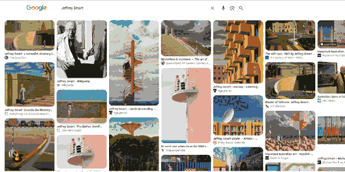

1921–2013, Adelaide / Tuscany
Empty roads, concrete, lone figures, cranes, water towers. Cities as stage sets. Flat light, hard edges. Nothing happens, everyone waits.

Google Images, 2026-10-22. Click for live results.
National Gallery of Australia, Art Gallery of NSW, wikipedia.